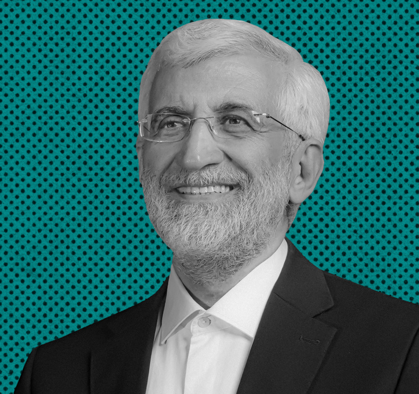

من در حمایت از جلیلی ویدئو میفرستم
ما از شما دعوت میکنیم تا فیلمهای خود در حمایت از دکتر جلیلی را با ما به اشتراک بگذارید. ما مشتاقانه منتظر دیدن و شنیدن پیامهای شما هستیم و از اینکه حمایت خود را نشان میدهید، سپاسگزاریم. با هم میتوانیم تأثیرگذار باشیم و صدای حمایت شما را به گوش مردم ایران برسانیم.